Plug-in Host
Manuel d'utilisation de l'hôte VST3 et VST 2 modulaire
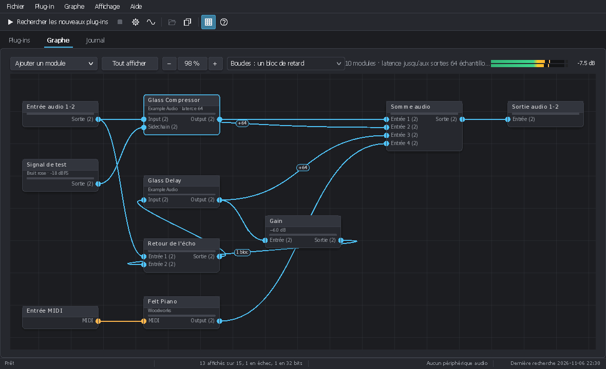
1Présentation
Plug-in Host est un hôte de plug-ins audio pour Windows. Il charge les plug-ins VST3 et VST 2 installés sur l'ordinateur, les fait jouer en direct par la carte son (ASIO ou WASAPI) et les relie entre eux comme sur un rack modulaire : chaque plug-in, chaque entrée ou sortie, chaque générateur de signal est un module, et des câbles transportent l'audio et le MIDI d'un module à l'autre.
Il sert à :
- essayer un plug-in rapidement, sans ouvrir une station audio (STAN) ;
- monter une chaîne d'effets ou un instrument pour jouer en direct, avec la latence la plus basse que permet la carte son ;
- construire des traitements parallèles, multibandes ou avec des boucles de réinjection ;
- tester ses propres plug-ins pendant leur développement (journal détaillé, état enregistré et restauré, latence affichée).
La fenêtre a trois onglets :
- Plug-ins : la liste des plug-ins installés, avec recherche, filtres, tris et détails ;
- Graphe : les modules qui jouent et leurs câbles ;
- Journal : les messages de la session (plug-ins chargés ou refusés, fichiers, périphérique audio).
Plug-in Host fait partie de PluginUI, une bibliothèque C# d'interfaces
pour plug-ins audio. Il partage ses réglages, sa liste de plug-ins et ses fichiers de graphe avec pluginhost,
l'hôte en ligne de commande (voir chapitre 14).
2Installation et premier lancement
Configuration requise
- Windows 10 ou 11, 64 bits (x64 ou ARM64).
- Une carte son : son pilote ASIO pour la latence la plus basse, sinon la carte son de Windows (WASAPI).
- Des plug-ins VST3 ou VST 2 64 bits, et des plug-ins VST 2 32 bits par le pont 32 bits (chapitre 10). Les plug-ins VST3 32 bits sont listés, signalés « 32 bits », mais ne se chargent pas.
Depuis une version publiée
- Sur la page Releases du projet, téléchargez
PluginHost-<version>-win-x64.zip(ou…-win-arm64.zippour un PC ARM). - Décompressez l'archive dans un dossier de votre choix. Aucune installation ni aucun runtime .NET ne sont nécessaires :
PluginHost.exeest un programme natif. Gardez le dossierbridge32à côté : il fait fonctionner les plug-ins 32 bits. - Lancez
PluginHost.exe. Si Windows SmartScreen affiche un avertissement (le programme n'est pas signé), cliquez sur Informations complémentaires puis Exécuter quand même.
Depuis les sources
Avec le SDK .NET 10 et le dépôt cloné :
# pour le débogage
dotnet run --project tools/PluginHost.Desktop
# un seul PluginHost.exe natif
dotnet publish tools/PluginHost.Desktop -c Release -r win-x64 -p:PublishAot=trueDans Visual Studio, ouvrez la solution et lancez le projet PluginHost.Desktop.
Au premier lancement
La liste des plug-ins est vide : lancez une recherche avec F5 (chapitre 6), puis choisissez votre carte son dans Fichier > Audio et MIDI (Ctrl+Maj+A, chapitre 7). L'onglet Graphe contient déjà un graphe minimal : une entrée audio, une entrée MIDI et une sortie audio.
Langue. L'interface suit la langue de Windows (français ou anglais). Affichage > Langue la change ; elle s'applique au prochain lancement.
3Prise en main : votre premier graphe
Ce tutoriel fait passer une guitare (ou un micro) branchée sur l'entrée 1 de la carte son dans un ampli virtuel puis dans un délai, et l'envoie sur les sorties 1 et 2. Remplacez les plug-ins par ceux que vous avez.
- Choisir la carte son. Fichier > Audio et MIDI : choisissez ASIO et le pilote de votre carte (ou WASAPI et vos périphériques), avec ses entrées, puis OK. La barre d'état affiche le périphérique, sa fréquence et son tampon.
- Trouver les plug-ins. Appuyez sur F5. La progression s'affiche dans la barre d'état ; la liste se remplit à la fin de la recherche.
- Repartir d'un graphe vierge. Fichier > Nouveau graphe (Ctrl+N) : une entrée audio, une entrée MIDI et une sortie audio.
- Ajouter l'ampli. Dans l'onglet Plug-ins, tapez son nom dans la zone de recherche (Ctrl+F) et double-cliquez sur sa ligne. Il arrive dans le graphe, déjà relié à l'entrée MIDI et à la sortie audio libre, et l'onglet Graphe s'affiche.
- Brancher l'entrée. Glissez du connecteur Sortie du module Entrée audio jusqu'au connecteur d'entrée de l'ampli. Seuls les connecteurs compatibles s'allument pendant le glissement.
- Ajouter le délai. Revenez à la liste (Ctrl+1) et double-cliquez sur le délai. Comme la sortie audio a déjà un câble, il arrive sans câble de sortie.
- Insérer le délai. Glissez de la sortie de l'ampli vers l'entrée du délai, puis de la sortie du délai vers l'entrée de Sortie audio : le nouveau câble remplace l'ancien, car une entrée ne prend qu'un câble.
- Régler. Double-cliquez sur un plug-in pour ouvrir sa fenêtre (son interface, ses presets). Jouez : l'indicateur à droite de la barre du graphe montre le niveau de sortie et la crête la plus haute en dB.
- Enregistrer. Fichier > Enregistrer le graphe (Ctrl+S). Le
fichier
.pluginui-graphgarde les modules, les câbles et les réglages de chaque plug-in. Le graphe en cours revient aussi tout seul au prochain lancement.
Astuce. Pour entendre l'ampli et le délai en parallèle plutôt qu'en série, ajoutez un module Somme audio (Ajouter un module), reliez les deux plug-ins à ses entrées et sa sortie à Sortie audio. Les signaux ne s'additionnent que dans une somme.
4La fenêtre principale
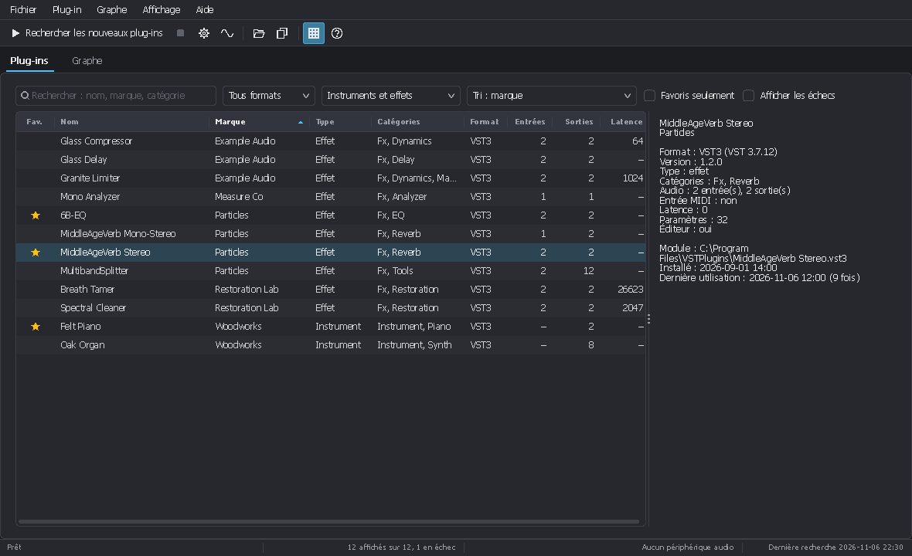
Les menus
| Menu | Contenu |
|---|---|
| Fichier | Nouveau graphe, Ouvrir un graphe, Enregistrer le graphe, Enregistrer le graphe sous ; Rechercher les nouveaux plug-ins, Tout rechercher à nouveau, Arrêter la recherche ; Dossiers de plug-ins ; Audio et MIDI ; Quitter. |
| Plug-in | Ajouter au graphe, Favori, Afficher dans l'Explorateur, Copier le chemin, Ignorer le module. |
| Graphe | Ajouter un module, Renommer le module, Retard des boucles. |
| Affichage | Liste des plug-ins, Graphe, Journal ; Rechercher ; Volet des détails ; Plein écran ; Colonnes ; Thème clair ; Langue. |
| Aide | À propos (version et crédits). |
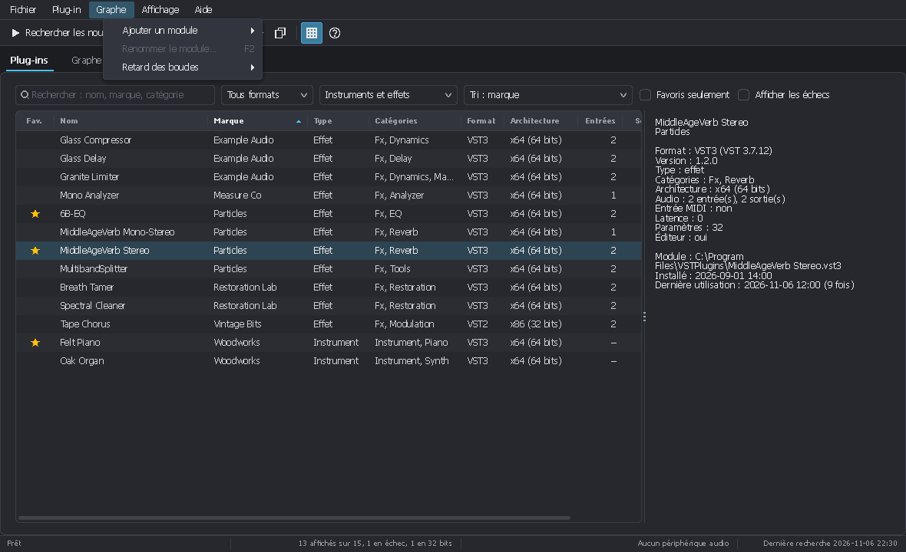
La barre d'outils
De gauche à droite : Rechercher les nouveaux plug-ins, Arrêter la recherche, Dossiers de plug-ins (roue dentée), Audio et MIDI (onde), Ajouter au graphe, Copier le chemin, Volet des détails et À propos. Survoler un bouton affiche son rôle et son raccourci.
La barre d'état
Elle montre la progression d'une recherche ou le dernier message, le nombre de plug-ins affichés (et en échec), le périphérique audio avec sa fréquence et son tampon, et la date de la dernière recherche. Ses messages s'effacent après quelques secondes, mais restent dans le journal.
Thème, plein écran
Affichage > Thème clair (Ctrl+T) bascule entre le thème sombre et le thème clair. Plein écran (F11, Échap pour en sortir) donne tout l'écran à la fenêtre. L'onglet choisi, les colonnes, les filtres, le thème et la carte son sont retrouvés au lancement suivant.
5La liste des plug-ins
Rechercher et filtrer
La barre au-dessus de la liste réunit :
- la zone de recherche (Ctrl+F) : nom, marque ou catégorie ;
- le format : tous, VST3 ou VST2 ;
- le type : instruments et effets, instruments seuls, effets seuls ;
- le tri : nom, marque, catégorie, format, canaux d'entrée ou de sortie, latence, date d'installation, utilisés récemment, les plus utilisés, favoris d'abord, dossier, état ;
- Favoris seulement et Afficher les échecs (les plug-ins que la recherche n'a pas pu charger, en rouge, et ceux qui ne peuvent pas fonctionner ici, comme les plug-ins VST3 32 bits, en orange).
Trier et choisir les colonnes
Un clic sur l'en-tête d'une colonne trie la liste ; un second clic inverse l'ordre. Un clic droit sur l'en-tête (ou Affichage > Colonnes) affiche ou masque les colonnes : favori, nom, marque, type, catégories, format, architecture, entrées, sorties, sidechain, MIDI, latence, paramètres, éditeur, version, installé, utilisé le, utilisations, dossier, état. Glissez le bord d'un en-tête pour changer la largeur.
La colonne Architecture indique le processeur pour lequel chaque plug-in est construit : x64 (64 bits), x86 (32 bits), ARM64… Un tri sur cette colonne regroupe les plug-ins 32 bits. Elle est lue dans les fichiers des modules, aussi pour les plug-ins trouvés par une version précédente.
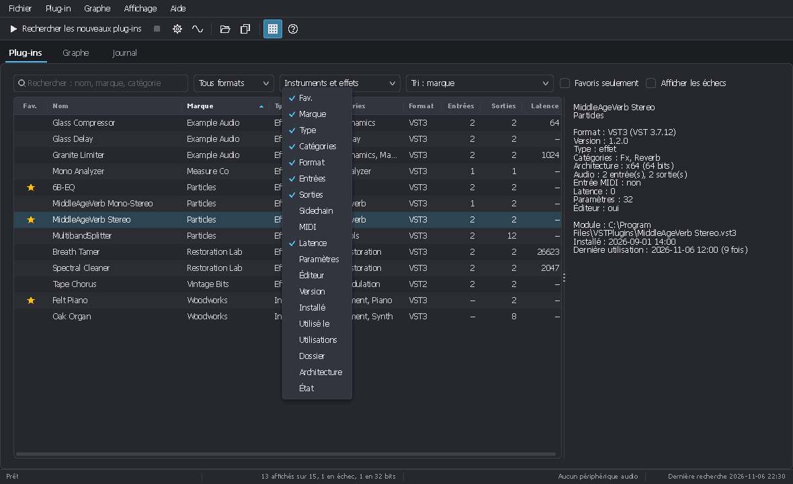
Le volet des détails
Affichage > Volet des détails (Ctrl+I) affiche à droite tout ce qu'on sait du plug-in choisi : format et version du SDK, version, catégories, architecture (x64, x86 32 bits…), bus d'entrée et de sortie, entrée MIDI, latence (en échantillons et en millisecondes), nombre de paramètres, présence d'un éditeur, chemin du fichier, dates, nombre d'utilisations et, pour un plug-in en échec, la raison de l'échec.
Le menu Plug-in
Il s'ouvre aussi par un clic droit sur une ligne ou par la touche Menu du clavier :
- Ajouter au graphe (Entrée, double-clic, Ctrl+O) ;
- Favori (Ctrl+D) : une étoile marque les plug-ins que vous utilisez souvent ;
- Afficher dans l'Explorateur et Copier le chemin (Ctrl+Maj+C) ;
- Ignorer le module : retire le fichier de la liste et des recherches suivantes (pour un plug-in qui pose problème).
6Trouver les plug-ins installés
Lancer une recherche
- Rechercher les nouveaux plug-ins (F5) n'ouvre que les fichiers nouveaux ou modifiés depuis la dernière recherche : c'est rapide.
- Tout rechercher à nouveau (Maj+F5) ouvre de nouveau tous les fichiers.
- Arrêter la recherche l'interrompt : la liste reste alors inchangée.
Chaque fichier est ouvert dans un processus séparé : un plug-in qui plante ou ne répond plus pendant la recherche est marqué en échec, sans arrêter Plug-in Host. La liste ne change qu'une fois la recherche terminée ; la barre d'état en donne le bilan (modules ouverts, inchangés, retirés, en échec) et le journal la liste des échecs.
Les dossiers de plug-ins
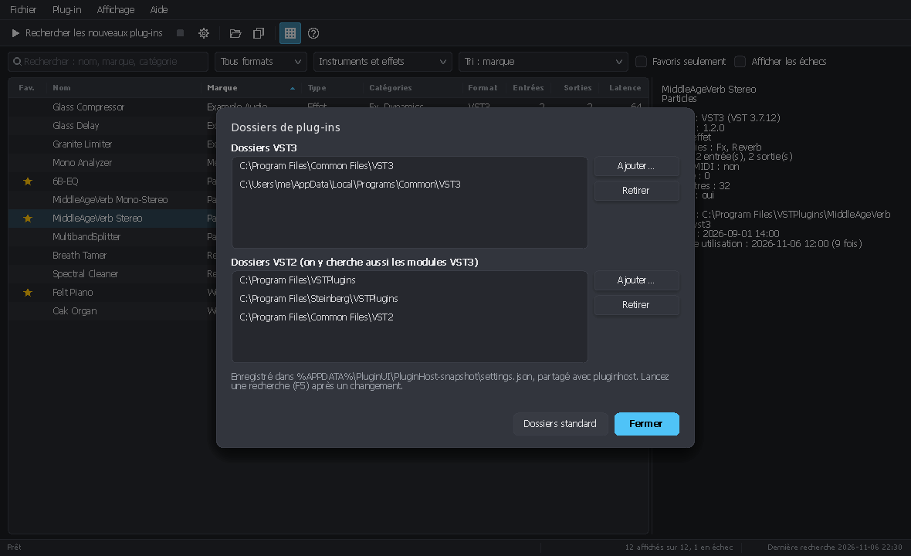
Fichier > Dossiers de plug-ins (Ctrl+Maj+F) donne une seule liste de dossiers,
chacun parcouru avec ses sous-dossiers pour les deux formats. Dossiers standard remet les dossiers habituels
de Windows (par exemple C:\Program Files\Common Files\VST3 et les dossiers VST 2 connus). Après une
modification, lancez une recherche.
7Audio et MIDI
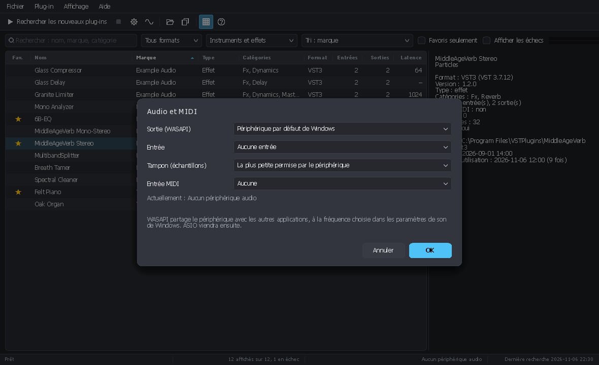
Fichier > Audio et MIDI (Ctrl+Maj+A) choisit le pilote et les ports :
WASAPI (la carte son de Windows)
- Périphérique de sortie et périphérique d'entrée.
- Taille du tampon : par défaut la plus petite que permet le périphérique, souvent moins de 3 ms à 48 kHz.
- Le périphérique reste partagé avec les autres applications, à la fréquence réglée dans les paramètres de son de Windows.
ASIO (pilote de la carte son)
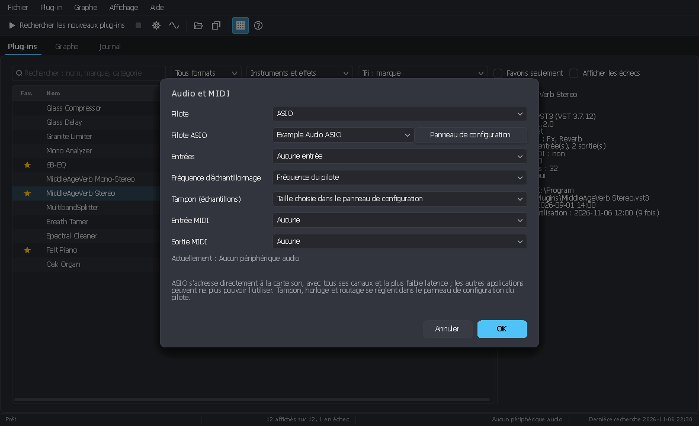
- Le pilote de la carte et son Panneau de configuration (tampon, horloge, routage). Le panneau s'ouvre quand le pilote fonctionne : choisissez d'abord le pilote et validez par OK.
- Les entrées : aucune, ou toutes celles de la carte.
- La fréquence d'échantillonnage : celle du pilote, ou de 44,1 à 192 kHz si la carte l'accepte.
- Le tampon : celui du panneau de configuration par défaut.
Toutes les sorties de la carte sont disponibles. Quand le panneau de configuration change le tampon ou la fréquence, Plug-in Host redémarre le pilote de lui-même.
MIDI
Le port d'entrée MIDI alimente les modules Entrée MIDI du graphe (un clavier maître, par exemple) ; le port de sortie MIDI reçoit ce qui arrive aux modules Sortie MIDI.
Sans carte son
Avec Aucun périphérique audio comme pilote, ou si le périphérique ne peut pas s'ouvrir, le graphe tourne sur une horloge à 48 kHz avec une sortie muette : les plug-ins, leurs éditeurs et leurs paramètres se comportent comme dans une STAN.
Le niveau de sortie
L'indicateur à droite de la barre du graphe montre le niveau des deux premières sorties. À sa droite, la
crête la plus haute en dB depuis le dernier clic sur l'indicateur (par exemple -7.5 dB, ou
+1.2 dB en rouge quand le signal dépasse 0 dBFS). Un clic l'efface.
8Le graphe
Principe
Ce qui joue est un graphe de modules reliés par des câbles. Les entrées d'un module sont à
gauche, ses sorties à droite ; chaque connecteur indique son nombre de canaux, par exemple Entrée (2). Les
connecteurs audio sont bleus, les connecteurs MIDI orange.
- Une sortie alimente autant de câbles que voulu.
- Une entrée ne prend qu'un câble : un nouveau câble remplace l'ancien. Les signaux ne s'additionnent que dans un module Somme audio ou Fusion MIDI.
- Un signal mono qui entre dans une entrée stéréo alimente les deux canaux ; deux canaux qui entrent dans une entrée mono sont moyennés ; sinon les premiers canaux se correspondent. Les modules Muxer et Demuxer réunissent ou séparent les canaux explicitement.
- Un plug-in joue tant que son module est dans le graphe, que sa fenêtre soit ouverte ou non.
Ajouter des modules
- Un plug-in : double-clic (ou Entrée) sur sa ligne dans la liste. Son entrée MIDI est reliée au module Entrée MIDI et sa sortie principale à un module Sortie audio qui n'a pas encore de câble.
- Les autres modules : bouton Ajouter un module de la barre, menu Graphe > Ajouter un module, ou clic droit sur un endroit vide du graphe (le module se place à cet endroit).
Câbler
- Tirer un câble : glissez d'un connecteur à un autre, depuis une sortie ou depuis une entrée. Seuls les connecteurs compatibles s'allument : audio vers audio, MIDI vers MIDI.
- Déplacer ou enlever un câble : saisissez son bout côté entrée et écartez-le ; lâchez-le sur une autre entrée pour le déplacer, ou dans le vide pour l'enlever. Un clic sur un câble le sélectionne ; Suppr l'enlève.
- Au clavier : le menu d'un module (clic droit, Maj+F10) propose Relier, avec toutes les entrées compatibles, et Débrancher. C'est aussi ce qu'utilisent les lecteurs d'écran.
Les boucles
Un câble peut revenir en arrière et former une boucle, pour une réinjection par exemple. Un plug-in traite des blocs
entiers d'échantillons : le câble qui ferme la boucle, dessiné en pointillés avec l'étiquette
1 bloc, livre donc son signal avec un bloc de retard.
- Boucles dans la barre du graphe (ou Graphe > Retard des boucles) fait tourner les modules des boucles par sous-blocs de 16, 32, 64 ou 128 échantillons : le retard devient ce sous-bloc, au prix de plus d'appels à leurs plug-ins.
- Couper la boucle ici, dans le menu d'un câble, choisit quel câble de la boucle porte le retard.
La latence
Certains plug-ins ont une latence (un limiteur à anticipation, un égaliseur à phase linéaire…). Une
Somme audio retarde ses entrées pour que des chemins de latences différentes arrivent alignés : le retard
ajouté s'affiche sur le câble, par exemple +64. Cela se désactive dans les réglages de la somme. La barre du
graphe indique la latence jusqu'aux sorties, en échantillons et en millisecondes.
Le menu d'un module
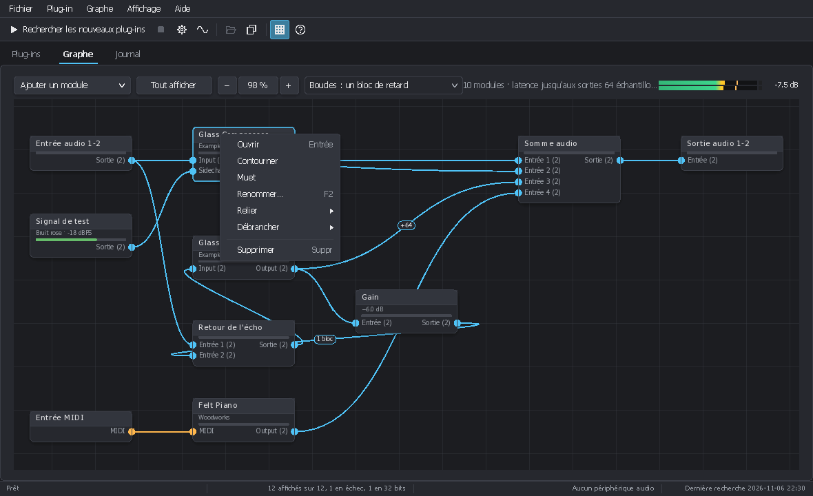
- Ouvrir (double-clic, Entrée) : la fenêtre du plug-in, ou celle des réglages du module.
- Contourner et Muet (plug-ins). Un module contourné ou muet est grisé, avec un badge.
- Renommer (F2).
- Relier et Débrancher.
- Supprimer (Suppr) : les réglages d'un plug-in sont alors perdus ; Plug-in Host demande confirmation.
Se déplacer dans le graphe
- Déplacer la vue : glissez avec le bouton du milieu (ou Alt+glisser). La molette fait défiler, Maj+molette de côté ; des barres de défilement apparaissent quand le graphe dépasse.
- Zoomer : Ctrl+molette autour de la souris, + et −, ou les boutons − et + de la barre, de 10 % à 250 %. Le pourcentage entre les deux boutons indique le zoom ; un clic dessus (ou Ctrl+0) revient à la taille réelle.
- Tout afficher (Origine) ajuste le graphe à la fenêtre.
Placer et sélectionner les modules
- Glissez l'en-tête d'un module pour le déplacer. Les modules s'alignent sur une grille qui tient leur premier connecteur : deux modules alignés ont des câbles droits. Maj pendant le glissement les place librement.
- Glisser sur un endroit vide sélectionne plusieurs modules au rectangle ; Maj+clic ajoute un module à la sélection ou l'en retire, Maj+glisser ajoute un rectangle ; la sélection se déplace d'un bloc.
- Au clavier : Ctrl+← / Ctrl+→ sélectionnent le module précédent ou suivant, Ctrl+A tous ; les flèches déplacent la sélection (Maj pour aller plus loin).
Les fichiers de graphe
- Nouveau graphe (Ctrl+N) : une entrée audio, une entrée MIDI et une sortie audio.
- Ouvrir un graphe (Ctrl+Maj+O), Enregistrer le graphe (Ctrl+S), Enregistrer le graphe sous (Ctrl+Maj+S).
- Un fichier
.pluginui-graphgarde les modules, leur nom, leur place, les câbles et l'état de chaque plug-in. Plug-in Host demande s'il faut enregistrer les modifications avant de fermer ou d'ouvrir un autre graphe. - Le graphe tel qu'il était à la fermeture revient au lancement suivant, même s'il n'a jamais été enregistré sous un nom.
Plug-in absent. Un plug-in introuvable à l'ouverture d'un graphe (désinstallé, déplacé) reste comme module ABSENT : muet, grisé, avec ses câbles et ses réglages, et réenregistré tel quel. La raison est dans son info-bulle, dans le message affiché par un double-clic et dans le journal. Réinstallez-le, lancez une recherche (F5) et rouvrez le graphe.
9Les modules et leurs réglages
Un double-clic sur un module qui n'est pas un plug-in ouvre la fenêtre de ses réglages. Ils s'appliquent aussitôt, et la fenêtre peut rester ouverte pendant que le graphe joue, à côté d'autres.
| Module | Rôle et réglages |
|---|---|
| Plug-in | Un connecteur par bus (principal, sidechain…) avec son nombre de canaux, plus l'entrée et la sortie MIDI. Sa fenêtre est décrite au chapitre 10. |
| Entrée audio | Des canaux d'entrée du périphérique : premier canal, nombre de canaux, gain. Les canaux que le périphérique n'a pas restent muets. |
| Sortie audio | Vers des canaux de sortie du périphérique : premier canal, nombre de canaux, gain, muet. Plusieurs sorties sur les mêmes canaux s'additionnent. |
| Signal de test | Sinus, carré, dent de scie, triangle, bruit blanc, bruit rose, balayage ou impulsions : fréquence (début des balayages), fin et durée des balayages, intervalle des impulsions, niveau en dBFS, nombre de canaux. |
| Fichier audio | Lit un fichier WAV, rééchantillonné à la fréquence du périphérique : fichier, en boucle, pause, gain, nombre de canaux. |
| Entrée MIDI | Les notes du port d'entrée MIDI : tous les canaux ou un seul. |
| Clavier | Un clavier à l'écran, joué à la souris ou au clavier de l'ordinateur : canal MIDI, octave la plus basse. Sa fenêtre peut être agrandie. |
| Sortie MIDI | Envoie au port de sortie MIDI ce qui lui arrive. |
| Gain | Un grand bouton rotatif et une saisie en dB, inversion de polarité, muet, nombre de canaux, indicateur de niveau. |
| Somme audio | Additionne ses entrées : nombre d'entrées (2 à 32), nombre de canaux, gain des huit premières entrées, alignement des entrées sur la latence de leurs chemins. |
| Fusion MIDI | Réunit plusieurs flux MIDI dans l'ordre du temps : nombre d'entrées, alignement sur la latence. |
| Muxer | Réunit plusieurs câbles mono en un câble de plusieurs canaux (G et D en stéréo) : nombre d'entrées. |
| Demuxer | L'inverse : sépare les canaux d'un câble en sorties mono. |
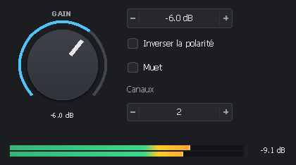
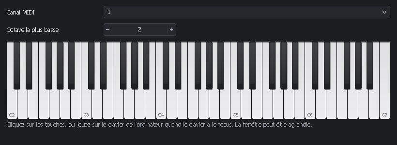
10Les fenêtres des plug-ins
Un double-clic sur un module de plug-in ouvre sa fenêtre. Elle affiche :
- l'éditeur du plug-in, à la taille qu'il demande, redimensionnable s'il le permet ;
- ou la table générique des paramètres quand il n'a pas d'éditeur (le bouton Paramètres
l'affiche sinon). Les valeurs s'y saisissent comme le plug-in les affiche (
-6 dB,Warm) ou en valeurs normalisées, de 0 à 1.
La barre du haut
- Charger un preset et Enregistrer le preset : fichiers
.vstpresetpour les plug-ins VST3,.fxp/.fxbpour les VST 2. Ils s'échangent avec les STAN. - Paramètres : la table générique.
- Plein écran (F11) : la fenêtre du plug-in sur tout l'écran, pour la scène ou un second écran. Échap ou le bouton en sortent ; si l'éditeur du plug-in a le clavier, cliquez d'abord sur la barre du haut.
- À droite : latence, nombre d'entrées et de sorties, fréquence d'échantillonnage.
La barre du bas
- Contourner : l'entrée principale va directement à la sortie principale.
- Muet : coupe les sorties du plug-in.
- L'indicateur de niveau de sa sortie, avec la crête la plus haute en dB (un clic l'efface).
- Pour un instrument, un clavier à l'écran dont les notes vont à ce plug-in ; les notes du port d'entrée MIDI allument ses touches.
Fermer la fenêtre ne ferme que l'éditeur : le plug-in continue de jouer dans le graphe. Plusieurs fenêtres peuvent être ouvertes à la fois.
Les plug-ins 32 bits
Plug-in Host est un programme 64 bits, et un programme 64 bits ne peut pas charger un plug-in 32 bits. Il fait donc
fonctionner chaque plug-in VST 2 32 bits dans un pont : un petit programme 32 bits,
PluginHost.Bridge32.exe, installé dans le dossier bridge32 à côté de PluginHost.exe.
Il n'y a rien à faire : la recherche liste ces plug-ins normalement (avec l'architecture x86 dans les détails), et ils
s'ajoutent au graphe, jouent, s'enregistrent et se restaurent comme les autres.
- Dans le graphe, leur module indique 32 bits après la marque ; le journal précise « dans le pont 32 bits » à leur chargement.
- Leur fenêtre affiche leur propre éditeur, que le pont fait fonctionner dans la fenêtre de Plug-in Host, ou la table générique avec le bouton Paramètres, comme pour les autres.
- Chacun tourne dans son propre processus de pont : s'il plante, Plug-in Host continue et le module est marqué en échec.
- Chaque bloc fait un aller-retour vers le pont : un peu plus de calcul qu'un plug-in 64 bits.
- Les plug-ins VST3 32 bits ne passent pas par le pont : ils restent listés en orange, avec l'état « 32 bits ».
11Le journal
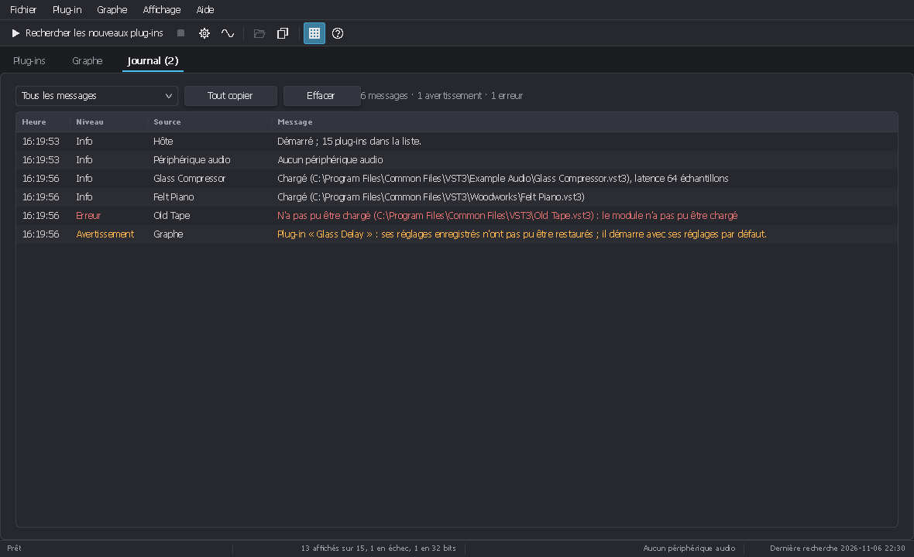
L'onglet Journal (Ctrl+3) liste les messages de la session, avec leur heure, leur niveau (Info, Avertissement, Erreur) et leur source :
- le démarrage et le périphérique audio ;
- chaque plug-in chargé, avec son fichier et sa latence, ou refusé, avec la raison ;
- les graphes ouverts et enregistrés, et ce qui n'a pas pu être restauré ;
- les presets qui n'ont pas pu être chargés ou enregistrés ;
- les plug-ins qu'une recherche n'a pas pu charger ;
- tous les messages de la barre d'état.
La liste déroulante montre tous les messages, les avertissements et erreurs, ou les erreurs seules. Tout copier met les messages affichés dans le presse-papiers (heure, niveau, source et message séparés par des tabulations) ; le clic droit copie les lignes choisies. Le titre de l'onglet compte les avertissements et les erreurs, par exemple Journal (2). Effacer vide la liste.
Signaler un problème. Copiez le journal avec Tout copier et collez-le dans votre message : il dit quel fichier a été chargé, avec quel résultat.
12Raccourcis clavier
Partout
| Touches | Action |
|---|---|
| Ctrl+1 / 2 / 3 | Onglet Plug-ins / Graphe / Journal |
| Ctrl+N | Nouveau graphe |
| Ctrl+Maj+O | Ouvrir un graphe |
| Ctrl+S | Enregistrer le graphe |
| Ctrl+Maj+S | Enregistrer le graphe sous |
| F5 / Maj+F5 | Rechercher les nouveaux plug-ins / tout rechercher à nouveau |
| Ctrl+Maj+F | Dossiers de plug-ins |
| Ctrl+Maj+A | Audio et MIDI |
| Ctrl+T | Thème clair ou sombre |
| F11 / Échap | Plein écran / en sortir |
| F1 | À propos |
Liste des plug-ins
| Touches | Action |
|---|---|
| Ctrl+F | Aller à la zone de recherche |
| Entrée, double-clic, Ctrl+O | Ajouter le plug-in au graphe |
| Ctrl+D | Favori |
| Ctrl+Maj+C | Copier le chemin |
| Ctrl+I | Volet des détails |
| Touche Menu | Menu du plug-in |
Graphe
| Touches | Action |
|---|---|
| Entrée, double-clic | Ouvrir le module choisi |
| F2 | Renommer le module |
| Suppr | Supprimer la sélection ou le câble choisi |
| Ctrl+← / → | Module précédent / suivant |
| Ctrl+A | Tout sélectionner |
| Flèches (Maj : plus loin) | Déplacer la sélection |
| Origine | Tout afficher |
| + / − / Ctrl+0 | Zoomer / dézoomer / taille réelle |
| Maj+F10, touche Menu | Menu de la sélection |
| Ctrl+molette | Zoomer autour de la souris |
| Molette / Maj+molette | Faire défiler / de côté |
| Glisser avec le bouton du milieu | Déplacer la vue (aussi Alt+glisser) |
| Glisser sur le fond | Sélectionner au rectangle (Maj : ajouter) |
| Maj+clic sur un module | L'ajouter à la sélection, ou l'en retirer |
| Maj en déplaçant un module | Le placer hors de la grille |
13Dépannage
Le premier réflexe : ouvrir l'onglet Journal. La plupart des problèmes y sont expliqués.
- Je n'entends rien.
- Vérifiez que la barre d'état affiche bien votre carte son (et non Aucun périphérique audio) ; sinon ouvrez Audio et MIDI. Vérifiez ensuite que le dernier module est relié à une Sortie audio sur les bons canaux, et qu'aucun module n'est muet ou contourné (badge sur le module). Les petits indicateurs dans les modules montrent où le signal s'arrête.
- Le pilote ASIO ne s'ouvre pas.
- Un pilote ASIO ne sert souvent qu'une application à la fois : fermez la STAN ou le lecteur qui l'utilise, puis choisissez de nouveau le pilote. Le message exact est dans le journal.
- Le son craque.
- Augmentez la taille du tampon (panneau de configuration ASIO, ou réglage WASAPI). Les boucles en sous-blocs (Graphe > Retard des boucles) coûtent aussi plus de calcul : revenez à Un bloc.
- Un plug-in manque dans la liste.
- Cochez Afficher les échecs : s'il apparaît en rouge, le volet des détails (Ctrl+I)
donne la raison. Sinon, vérifiez que son dossier est dans Dossiers de plug-ins et lancez
Tout rechercher à nouveau (Maj+F5). Un plug-in VST 2 32 bits en orange signifie que le pont manque (dossier
bridge32à côté dePluginHost.exe) ; un plug-in VST3 32 bits ne peut pas être chargé. - Un module affiche ABSENT.
- Le plug-in n'a pas pu être chargé à l'ouverture du graphe ; double-cliquez sur le module pour lire la raison. Ses câbles et ses réglages sont gardés : réinstallez-le ou relancez une recherche, puis rouvrez le graphe.
- Un plug-in démarre avec ses réglages par défaut.
- Le journal affiche alors un avertissement : le plug-in a refusé l'état enregistré. Les détails entre parenthèses (code de retour, octets lus, interfaces demandées) aident à comprendre pourquoi ; joignez-les à un rapport de bogue.
- Un plug-in plante pendant la recherche.
- La recherche le marque en échec sans arrêter Plug-in Host. Pour ne plus le voir, choisissez Ignorer le module dans le menu Plug-in.
- Le graphe est trop grand pour la fenêtre.
- Tout afficher (Origine) l'ajuste, les boutons − / + zooment, et glisser sur le fond déplace la vue.
- Les réglages de l'interface sont perdus ou étranges.
- Fermez Plug-in Host et renommez
gui.jsondans le dossier des réglages (chapitre 14) : il repart des valeurs par défaut.
14Fichiers et ligne de commande
Le dossier des réglages
Plug-in Host range ses fichiers dans %APPDATA%\PluginUI\PluginHost, c'est-à-dire en général
C:\Users\<nom>\AppData\Roaming\PluginUI\PluginHost :
| Fichier | Contenu |
|---|---|
settings.json | Les dossiers de plug-ins, les modules ignorés (IgnoredModules),
le délai accordé à chaque fichier pendant une recherche. Partagé avec pluginhost. |
plugins.json | La liste des plug-ins trouvés, avec favoris et utilisations. Partagée
avec pluginhost. |
gui.json | Les réglages de l'interface : thème, langue, colonnes, filtres, volet des détails, carte son, ports MIDI, onglet, dernier graphe. |
session.pluginui-graph | Le graphe de la dernière session, rouvert au lancement. |
PluginHost.exe --config <dossier> utilise un autre dossier de réglages, par exemple pour une configuration
de scène séparée.
La ligne de commande
pluginhost, l'hôte en ligne de commande (archive pluginhost-cli-<version>-win-x64.zip),
partage les dossiers, la liste des plug-ins et les fichiers de graphe. Il peut, par exemple, rendre hors temps réel un graphe
préparé dans Plug-in Host :
pluginhost graph mastering.pluginui-graph -i mix.wav -o master.wav
pluginhost graph pads.pluginui-graph --midi accords.mid -o pads.wav --tail 4Ses autres commandes (recherche, traitement d'un fichier, rendu MIDI, mesure d'une réponse, presets) sont décrites dans
le guide de l'hôte, qui couvre aussi la
bibliothèque PluginUI.Host pour les développeurs.